심리상담센터 하나로
진료 사이를 채우고, 매출을 만드세요
왜 대박인지, 돈이 어떻게 벌리는지 먼저 숫자로 보여 드리고, 사업자등록부터 제휴 신청, 콘솔 사용, 매일 할 일까지 순서대로 정리했어요.
1왜 대박인가
진료와 진료 사이 3~4주가 비어 있어요
외래 환자는 한 달에 한 번 10분 진료를 받고, 나머지 시간은 혼자 버텨요. 마인드 인사이드는 그 사이를 채워요. 환자는 매일 AI 상담사와 기분을 기록하고, CBT·DBT 실습을 하고, 필요하면 원장님 센터 소속 심리사와 전화·채팅 상담을 받아요.
원장님은 콘솔에서 사이를 봐요
- 연결된 환자의 위험도와 이번 주 기분(환자가 동의한 경우), 숙제 진행
- 소속 심리사가 회기 기록에 긴급을 찍으면 원장님 이메일로 즉시 알림
- 회기 기록 타임라인, 상담사·환자에게 피드백 남기기
심리상담이 별도 매출이 돼요
센터는 상담료를 받고, 소속 심리사에게 계약대로 지급해요. 그 차이가 센터 수익이에요. 원장님이 이미 가진 환자 기반이 곧 내담자 기반이에요.
공간·인력 고정비가 거의 없어요
상담은 전화·채팅이라 상담실을 늘릴 필요가 없어요. 예약·결제·환불·리마인더·정산 계산은 앱이 해요. 원장님과 직원이 할 일은 승인 버튼 몇 개와 긴급 알림 확인이에요.
2돈은 어떻게 벌리나
| 경우 | 상담료 나누기 | 상담사 지급 |
|---|---|---|
| 소속 상담사가 상담 (센터에 연결된 환자든 아니든) | 센터 90% · 앱 7% · 카드 수수료 3% | 센터가 계약대로 |
| 센터에 연결된 환자가 소속 아닌 상담사와 상담 | 센터 소개료 20% · 상담사 70% · 나머지 앱 | 앱이 지급 |
한 건 예시 — 30분 50,000원
| 항목 | 금액 |
|---|---|
| 센터로 들어오는 돈 (90%) | 45,000원 |
| 앱 이용료 (7%) | 3,500원 |
| 카드 수수료 (3%) | 1,500원 |
| 심리사에게 30,000원을 준다면 센터 몫 | 15,000원 |
한 달 예시 — 심리사 3명, 각자 주 15건
| 항목 | 금액 |
|---|---|
| 한 달 상담 (3명 × 15건 × 약 4.3주) | 약 194건 |
| 센터로 들어오는 돈 (194 × 45,000) | 약 8,730,000원 |
| 심리사 지급 (194 × 30,000) | 약 5,820,000원 |
| 센터 몫 | 약 2,910,000원 |
심리사 지급액은 원장님이 정해요(위는 예시). 상담 장소가 필요 없어서 임대료가 늘지 않아요. 여기에 소속 아닌 상담사에게 연결된 환자의 소개료 20%(한 건 50,000원이면 10,000원)는 일손 없이 들어와요.
왜 많이 벌 수 있나
- 환자 기반이 이미 있어요. 내담자를 새로 모으는 비용이 거의 들지 않아요.
- 앱 몫이 7%예요. 결제·예약·정산 시스템을 직접 만들거나 사람을 두는 비용보다 작아요.
- 심리사를 늘리기 쉬워요. 공간이 필요 없어서 소속 심리사 수만큼 상담 건수가 늘어요.
- 환자가 떠나지 않아요. 진료 사이에도 센터와 연결돼 있어서 치료가 끊기지 않아요.
3솔직히 따져 보면
- 처음 내담자는 원장님 환자에게 앱을 안내하는 데서 나와요. 진료실·대기실 안내문, 상담소 코드 카드가 가장 확실한 길이에요.
- 심리상담은 건강보험·실손이 적용되지 않아요. 환자에게는 비용을 미리 알려 주세요.
- 회기 기록이 없는 상담은 정산에 올라가지 않아요. 심리사에게 꼭 쓰게 하세요.
- 의원과 센터는 업무·공간·돈·기록을 나눠야 해요. 아래 꼭 지킬 것을 보세요.
- 입금은 운영팀이 정산 처리할 때 들어와요. 콘솔 정산 화면에서 "앱 입금" 날짜로 확인해요.
4정신과 원장님: 사업자부터
의원 사업자로는 의료행위만 할 수 있어서, 앱 심리상담은 별도 심리상담센터 사업자로 해요. 허가·신고 없이 홈택스 사업자등록만 하면 돼요. (상담소를 이미 운영 중이면 이 단계는 건너뛰세요.)
- 사업장 정하기센터 주소를 정해요. 의원과 다른 호실이면 가장 깔끔해요. 임차라면 임대차계약서가 필요해요.
- 홈택스 개인 사업자등록 신청공동·간편인증으로 로그인 › 사업자등록 신청. 상호(예: ○○심리상담센터), 주소, 개업일을 적어요.
- 업종·유형업종코드 930925(기타 개인 서비스업), 사업 설명 "심리상담", 면세사업자. 강의·콘텐츠 매출이 섞일 예정이면 겸업으로.
- 서류 올리고 제출보통 당일~2영업일이면 사업자등록증이 나와요.
- 사업용 계좌 만들기센터 명의 계좌로 상담료를 받아요. 의원 계좌와 섞지 않아요.
5제휴 신청 — 처음부터 끝까지
- 가입 안내 열기mindinside.kr/blog/join › "기관으로 제휴하고 싶어요" › [제휴 신청].
- 기관 정보상담소(기관) 이름, 대표자(소장) 이름, 대표 이메일(로그인 링크와 긴급 알림이 여기로 가요), 전화, 주소, 전문 분야.
- 사업자 확인사업자등록번호 10자리와 사업자등록증 사진(심사에만 써요).
- 소개상담소 페이지에 보일 소개, 운영시간, 홈페이지·블로그 주소.
- 제출 → 심사 2~3일운영팀이 사업자등록증을 확인해요. 보류되면 사유가 메일로 와요.
- 승인 메일 받기상담소 코드(H-로 시작, 환자 연결용)와 소장 관리 코드(HA-로 시작, 콘솔 로그인용), 콘솔 주소가 와요. 두 코드는 쓰임이 달라요 — HA 코드는 원장님만 보관하세요.

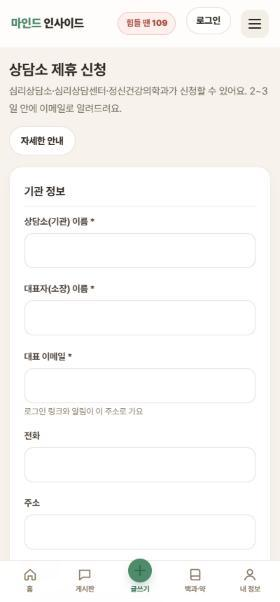
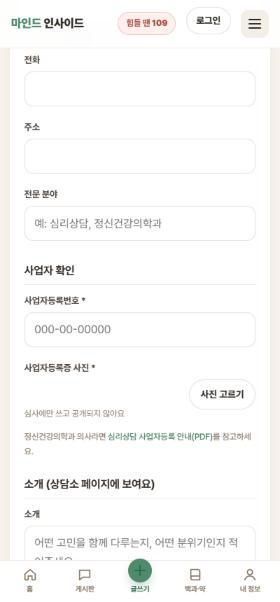
6승인 뒤 첫날 설정
- 콘솔 로그인doc.mindinsideapp.com 에서 대표 이메일을 넣고 [로그인 링크 받기] — 메일의 링크는 15분 안에 한 번만 쓸 수 있고, 들어오면 그 기기에서 30일 동안 열려요. 또는 [소장 관리 코드로 들어가기]에 HA 코드.
- 정산 계좌 등록설정 › 정산 계좌 › [계좌 등록]. 은행·계좌번호·예금주(상담소 명의). 계좌가 없으면 대시보드에 경고가 떠요.
- 사업자 정보·연락처설정에서 사업자등록번호(한 번만 저장돼요), 전화, 주소를 확인해요.
- 상담소 페이지 꾸미기상담소 페이지에서 소개·운영시간·전화·주소·홈페이지를 적고 [저장]. 커뮤니티 "심리상담소" 목록과 상담소 페이지에 보여요.
- 상담소 코드 복사대시보드 맨 아래 상담소 코드 [복사]. 환자 안내문에 넣어요.
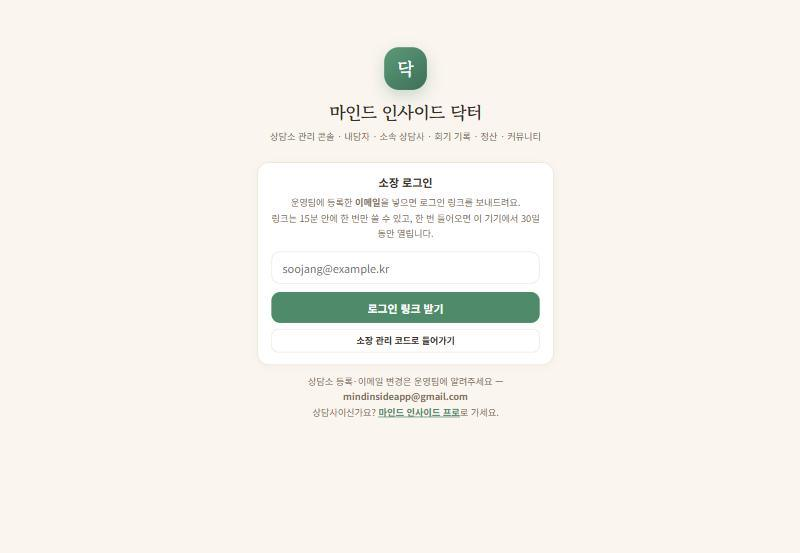
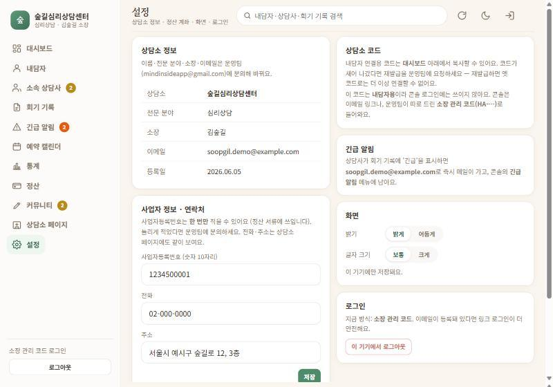
7상담사 모시기
- 심리사에게 입점 신청 안내mindinside.kr/blog/join/counselor 에서 신청하면서 소속 상담소로 우리 센터를 고르게 해요. (설명서: 상담사 설명서)
- 콘솔에서 승인소속 상담사 › "입점 승인 대기"에서 [자격증 사진 보기]로 확인하고 [승인 — 코드 발급]. 상담사 계정이 생기고 접속 코드가 그 상담사에게 메일로 가요. 맞지 않으면 [반려](사유 입력).
- 이미 입점한 상담사라면상담사가 앱 설정에서 소속을 우리 센터로 바꾸면 "소속 승인 대기"에 떠요. [소속 승인]을 누르면 그때부터 상담료가 센터로 정산돼요.
- 계약은 센터와 상담사 사이에상담사 지급액·지급일은 원장님과 상담사의 계약으로 정해요. 앱은 상담사에게 직접 돈을 보내지 않아요.
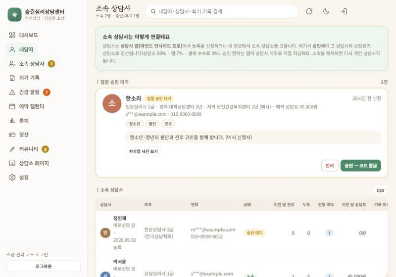
8환자·내담자 연결하기
- 앱 안내환자에게 mindinsideapp.com 을 열고 로그인하게 안내해요.
- 코드로 바로 연결마이 › 담당 상담소 연결하기 › 상담소 코드(H-…)를 넣으면 수락 없이 바로 연결돼요.
- 또는 목록에서 요청환자가 목록에서 센터를 고르면 "연결 요청"이 와요. 콘솔 내담자 화면 맨 위에서 [수락]·[거절]. 수락하기 전에는 아무 정보도 오지 않아요.
- 연결되면환자의 위험도·회기 기록·숙제, 동의한 경우 주간 기분이 보여요. 연결 해제는 언제든 할 수 있고, 해제하면 주간 숫자는 지워져요.
9콘솔 화면별 안내
왼쪽 메뉴(휴대폰에선 아래 탭) — 대시보드, 내담자, 소속 상담사, 회기 기록, 긴급 알림, 예약 캘린더, 통계, 정산, 커뮤니티, 상담소 페이지, 설정. 화면을 켜 두면 3분마다 저절로 새로 고쳐요.
대시보드
숫자 8칸(연결 내담자, 이번 주 긴급, 소속 상담사, 이번 달 완료 상담·상담료, 앱에서 받은 정산, 최근 7일 회기 기록, 새 댓글)과 할 일 카드 — 입점 승인 대기 [심사하기], 소속 승인 대기 [확인하기], 확인 안 한 긴급 [긴급 알림 보기], 계좌 없음 [계좌 등록].
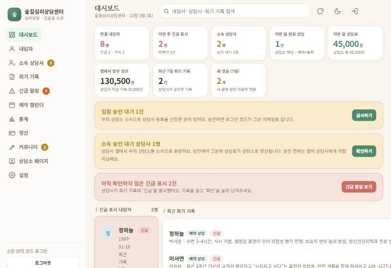
내담자
연결 요청 [수락]·[거절], 위험도순·최근 기록순 정렬, CSV 내보내기. 줄을 누르면 상세 — 주간 상태 막대(동의한 경우), 상담소 메모(상담사·내담자에게 안 보임), 타임라인, [피드백 쓰기](받는 사람: 상담사와 내담자 모두 / 상담사에게만 / 내담자에게만).
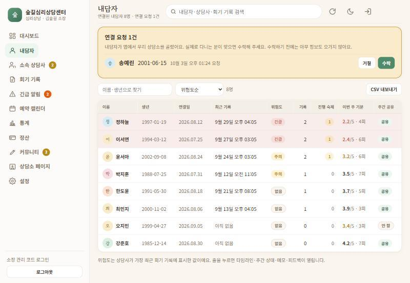
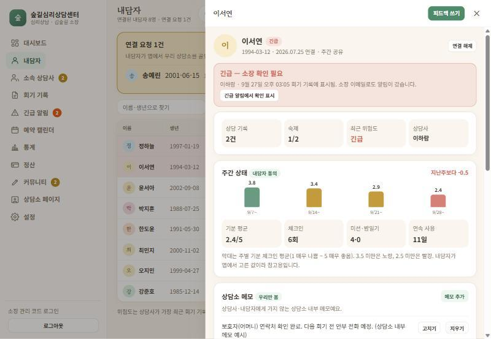
긴급 알림 · 회기 기록
상담사가 위험도 "긴급"을 찍은 기록이 모여요. 읽고 필요한 조치를 한 뒤 [확인했어요] — 누가 언제 확인했는지 남아요. 회기 기록은 날짜별 타임라인으로, 위험도·상담사·종류로 걸러 봐요. 상담사가 공유를 끈 기록은 보이지 않아요.
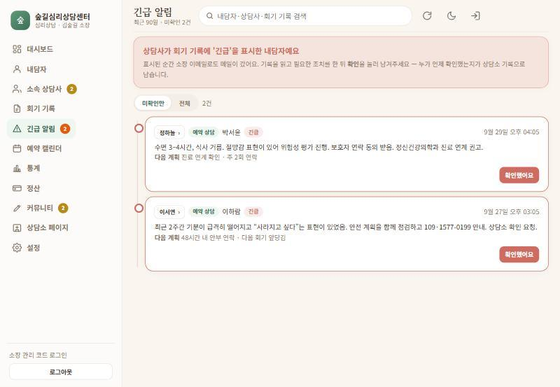
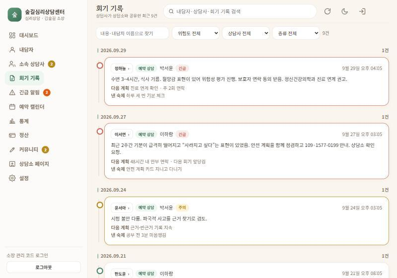
예약 캘린더 · 통계
소속 상담사의 주간 예약(실선 = 센터 채널, 점선 = 앱 채널, "소개" = 소개 채널)과 최근 6개월 통계(완료 상담, 상담료, 신규 연결, 긴급).
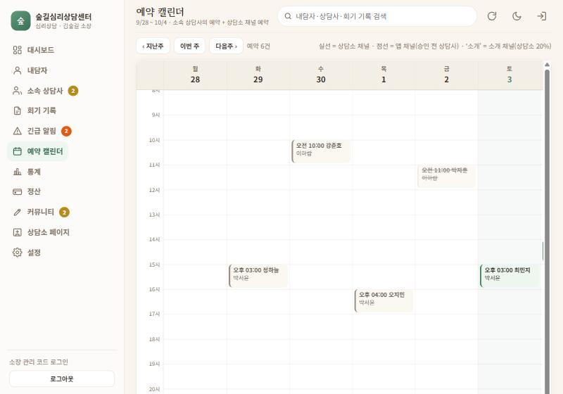
커뮤니티 · 상담소 페이지
센터 이름으로 칼럼·공지를 써요. 글은 앱과 커뮤니티에 공개되고, 검색에도 나와요. 홈페이지 상담소 페이지로 회원이 보낸 [받은 쪽지]에 답장해요. 개인 상담 내용이나 특정 내담자 이야기는 쓰지 마세요.
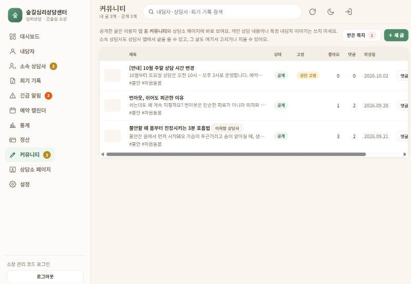
10정산 — 돈이 들어오고 나가는 길
- 상담 완료소속 상담사가 상담을 마치고 [상담 완료]를 눌러요.
- 회기 기록기록이 있어야 정산 대상이 돼요.
- 확정내담자가 확인하거나 72시간이 지나면 확정돼요.
- 앱 → 센터 입금운영팀이 정산 처리하면 센터 계좌로 90%(소개는 20%)가 들어와요. 콘솔 정산의 "앱 입금"에 날짜가 찍혀요.
- 센터 → 상담사 지급원장님이 계약대로 상담사에게 보내고, 건별 [지급 기록]에 금액·메모를 남겨요. 앱은 이 기록만 보관해요.
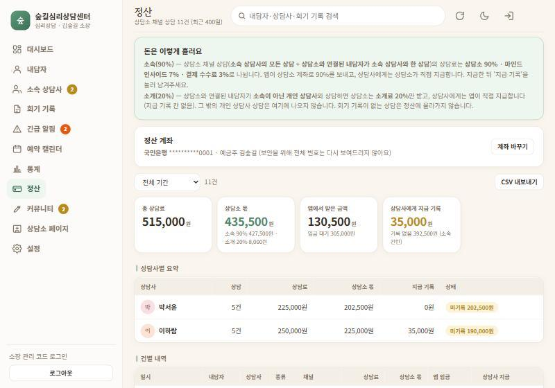
정산 화면에서 월을 고르고 [CSV 내보내기]로 세무사에게 넘길 자료를 받아요.
11매일·매주·매달 할 일
매일 (5~10분)
- 긴급 알림 미확인 0건읽고, 필요하면 환자·보호자·상담사에게 연락하고 [확인했어요]. 긴급은 이메일로도 와요 — 메일 알림을 켜 두세요.
- 연결 요청 처리내담자 화면 맨 위 [수락]·[거절]. 실제로 다니는 분이면 수락해요.
- 승인 대기 처리소속 상담사 화면의 입점 승인 대기·소속 승인 대기.
- 위험도 높은 환자 훑어보기내담자 화면을 위험도순으로 — 긴급·주의 환자의 최근 기록과 주간 기분.
- 받은 쪽지·새 댓글 답장커뮤니티 메뉴의 배지 숫자.
매주
- "기록 미작성" 0건 만들기소속 상담사 표의 기록 미작성 숫자 — 기록이 없으면 정산이 안 돼요. 해당 상담사에게 알려요.
- 피드백 남기기눈여겨볼 환자의 회기 기록에 [이 기록에 피드백]. 상담사에게 큰 힘이 돼요.
- 예약 캘린더 확인다음 주 상담이 한 상담사에게 몰리지 않았는지.
- 칼럼·공지 하나센터 이름이 커뮤니티와 검색에 꾸준히 보이게.
매달
- 정산 대조정산 화면 월별 — 앱 입금과 상담사 지급 기록을 맞춰요. "미기록" 금액이 남지 않게 [지급 기록].
- 세금 일정심리사 지급 다음 달 10일 원천세, 2월 사업장현황신고, 5월 종합소득세.
- 통계 보기완료 상담·신규 연결 추이로 상담사 충원 여부를 정해요.
12꼭 지킬 것
- 의료행위는 의원 안에서만. 센터·앱 상담에서는 진단명을 말하거나 약을 권하거나 처방하지 않아요.
- 센터 이름에 "의원", "클리닉", "치료"는 피하세요. 의료기관처럼 보이면 안 돼요.
- 공간·돈·기록을 나눠요. 다른 호실이 가장 깔끔하고, 상담료는 센터 계좌로, 상담 기록은 진료기록부와 따로.
- 환자 유인으로 보이지 않게. 센터 이용자에게 진료비 할인 같은 혜택을 묶어 주지 않아요.
- 같은 공간을 써도 되는지는 관할 보건소, 면세 여부는 세무사에게 한 번 확인하세요. 이 안내는 세무·법률 자문이 아니에요.
13자주 묻는 것
상담소 코드가 새 나갔어요
운영팀에 재발급을 요청하세요(mindinsideapp@gmail.com). 재발급하면 옛 코드는 더 이상 연결되지 않아요.
상담소 코드와 소장 관리 코드는 뭐가 달라요?
H-로 시작하는 상담소 코드는 환자 연결용이라 안내문에 써도 돼요. HA-로 시작하는 소장 관리 코드는 콘솔 로그인용이라 원장님만 보관해요.
환자의 AI 대화를 볼 수 있나요?
아니요. AI와 나눈 대화 원문은 환자 기기에만 있어요. 콘솔에는 상담사가 남긴 회기 기록과, 환자가 동의한 주간 기분 숫자만 보여요.
직원도 콘솔을 쓸 수 있나요?
로그인 링크는 대표 이메일로만 가요. 직원이 쓰려면 HA 코드를 함께 쓰거나, 이메일 변경을 운영팀에 요청하세요. 로그인한 기기에서 설정 › 로그아웃으로 정리할 수 있어요.
긴급 메일이 안 와요
설정의 이메일이 맞는지, 스팸함에 없는지 확인하세요. 긴급은 콘솔 긴급 알림 메뉴에도 늘 남아요.